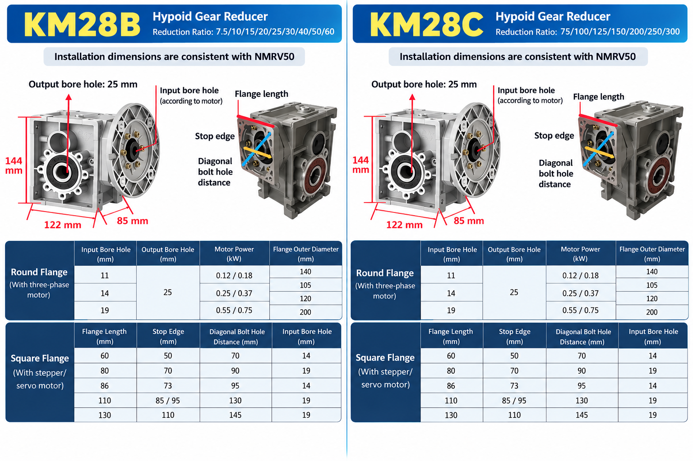

Published October 19, 2026 · SMK Transmission
Quick answer: The supplied reference shows KM28B ratios from 7.5:1 to 60:1 and KM28C ratios from 75:1 to 300:1. Both illustrations show a 25 mm output bore and dimensions corresponding to NMRV050 mounting. Replacement is not automatic: verify the exact drawing, motor interface, torque and operating conditions first.

KM28B and KM28C Overview
These compact right-angle hypoid reducers provide different reduction ranges while sharing the basic dimensional reference shown.
| Model | Reduction ratios | Transmission |
|---|---|---|
| KM28B | 7.5, 10, 15, 20, 25, 30, 40, 50, 60 | Two-stage |
| KM28C | 75, 100, 125, 150, 200, 250, 300 | Three-stage |
Overall Dimensions
For both configurations the reference shows 144 mm height, 122 mm housing length, 85 mm depth and a 25 mm hollow output bore. These are preliminary reference dimensions; request the approved drawing for your selected assembly.
Round Input Flanges
The diagram associates 11, 14 and 19 mm input bores with 0.12/0.18, 0.25/0.37 and 0.55/0.75 kW motor options respectively. The flange diameter labels shown include 140, 105, 120 and 200 mm. Confirm the precise bore, motor and flange combination with SMK before ordering.
Square Input Flanges
For stepper or servo connections, confirm motor shaft, locating feature and mounting holes against the selected drawing. Dimensions below are in millimeters.
| Flange side | Locating dimension | Diagonal bolt distance | Input bore |
|---|---|---|---|
| 60 | 50 | 70 | 14 |
| 80 | 70 | 90 | 19 |
| 86 | 73 | 95 | 14 |
| 110 | 85 / 95 | 130 | 19 |
| 130 | 110 | 145 | 19 |
KM28 vs NMRV050: Mounting Compatibility
The supplied reference identifies NMRV050 / RV50 as a mounting comparison. A similar mounting reference does not prove interchangeability. Check bolt positions, bore and keyway, flange, motor shaft, overall clearance, output direction, rated torque, thermal capacity and lubrication for the actual units. Compare the RV50 selection guide and our worm versus hypoid comparison.
Calculating Output Speed
Theoretical output speed equals motor input speed divided by reduction ratio. At 1,400 rpm, a 10:1 ratio gives 140 rpm, 60:1 gives approximately 23.3 rpm, and 300:1 gives approximately 4.7 rpm. Actual motor speed varies with motor specifications and operating conditions. Use our ratio and torque calculator for preliminary calculations.
Applications and Selection
Potential uses include conveyors, packaging machinery, automation, material handling and suitable mixer drives. Selection depends on output torque, operating hours, starts, shock loads, temperature and installation requirements.
Before requesting a replacement, provide the existing model and ratio, nameplate photo, motor power and speed, output bore and keyway, mounting dimensions, flange type and operating duty. Explore the hypoid reducer range for further options.
Request a KM28 Drawing
Contact SMK Transmission with the original gearbox model and the motor and mounting details. Our team can review the configuration and provide a quotation.